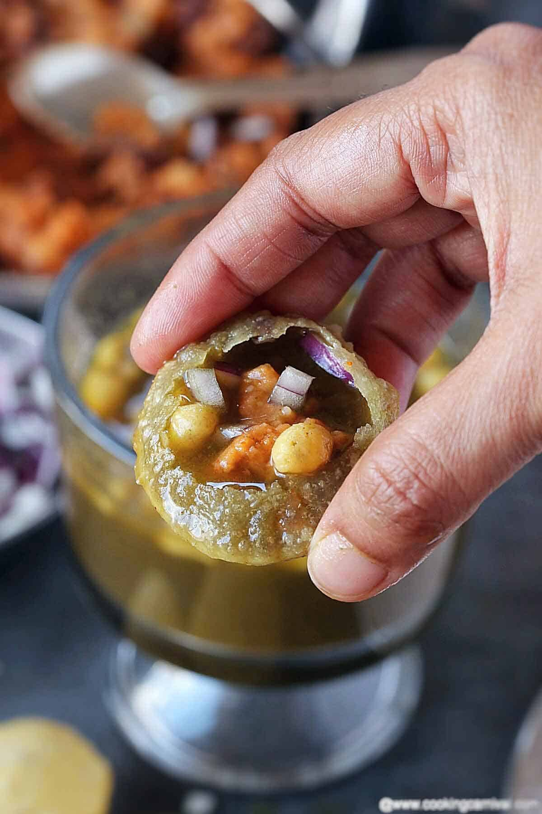

Pani Puri
Home

Description
Pani Puri, also known as Golgappa or Puchka in different parts of India, is one of the country's most beloved street foods. It consists of crispy hollow puris filled with a flavorful mixture of mashed potatoes, chickpeas, tangy tamarind chutney, and spicy mint-coriander water.
Every bite is a perfect balance of crunchy, spicy, tangy, and refreshing flavors. Best enjoyed immediately after filling the puris, Pani Puri is a favorite snack for festivals, family gatherings, and evening street food cravings.
Ingredients
- 20 crispy puris
- 2 medium potatoes, boiled and mashed
- 1 cup boiled chickpeas
- 2 tablespoons chopped coriander leaves
- 1 teaspoon roasted cumin powder
- 1 teaspoon chaat masala
- ½ teaspoon red chili powder
- Salt to taste
- 2 cups chilled mint-coriander water (pani)
- 2 tablespoons tamarind chutney
- 2 tablespoons green chutney
- Ice cubes (optional)
Steps
- Boil the potatoes until tender. Peel and mash them in a bowl. Add boiled chickpeas, roasted cumin powder, chaat masala, red chili powder, chopped coriander, and salt. Mix well.
- Prepare the spicy pani by mixing chilled mint-coriander water with a little extra chaat masala and salt if needed. Keep it refrigerated until serving.
- Gently make a small hole on the top of each crispy puri using your thumb. Be careful not to break the puri completely.
- Stuff each puri with a spoonful of the potato and chickpea mixture. Add a little tamarind chutney and green chutney if desired.
- Fill the puri with the chilled spicy pani and serve immediately while the puris remain crispy.